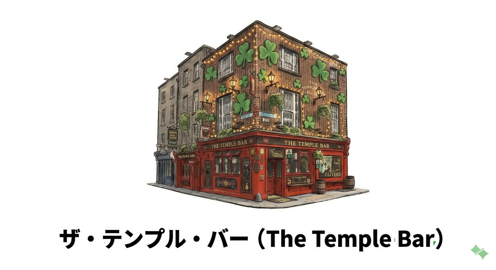
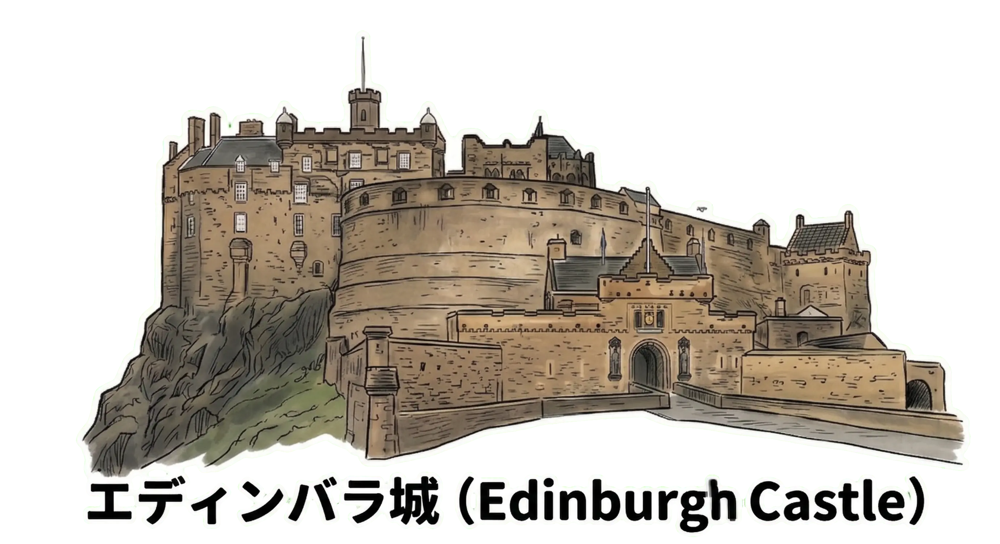
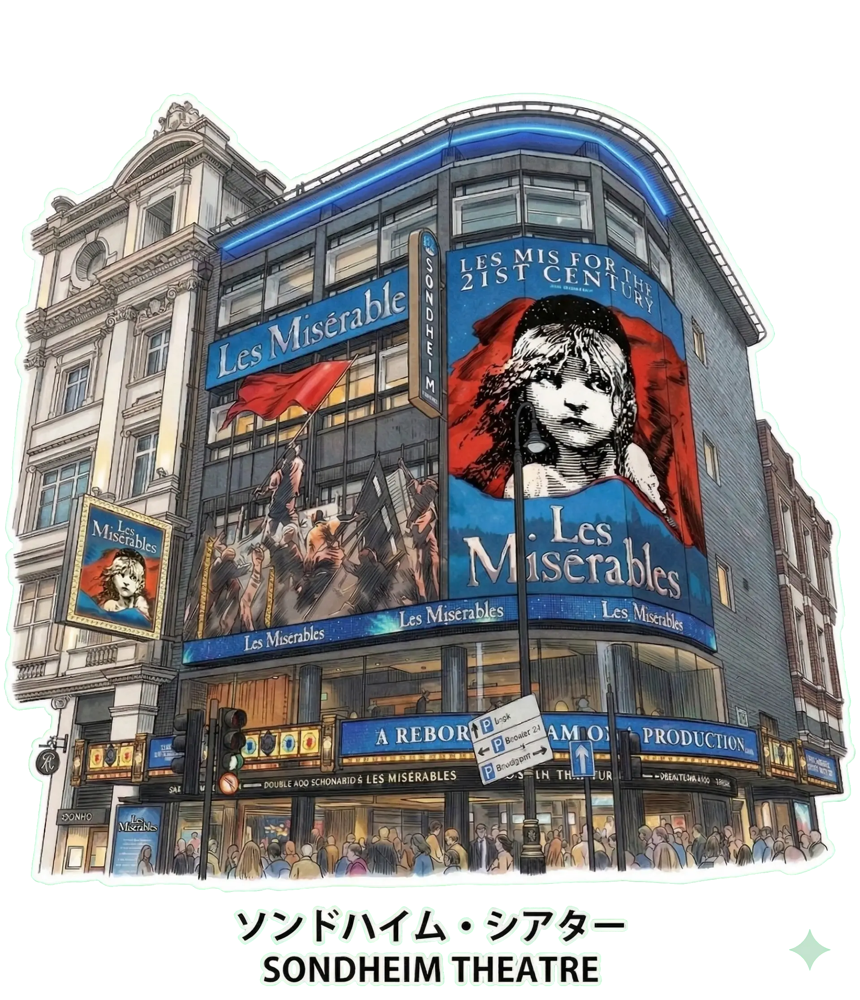

British Isles & Ireland Journey
FEB.18.2026 - MAR.11.2026
FEB.18.2026 - MAR.11.2026
上海の喧騒を離れ、14時間の空の旅。窓の外に広がる雲海を眺めながら、まだ見ぬ異国の空気に思いを馳せる。冒険の序章がついに幕を開ける。


赤いダブルデッカーが走り抜けるロンドンの街並み。ハリー・ポッターの世界を彷彿とさせるオックスフォードの学舎。歴史の重みに圧倒されながらも、一歩ずつ足跡を刻んでいく。


ダブリンのパブから流れる陽気な音楽。ホウスの断崖絶壁に打ち付ける荒波。アイルランドの厳しい自然と温かい人々に触れ、旅の深みが増していく。



エディンバラ城が街を見下ろす荘厳な景色。石畳の路地裏に潜む古い物語。バグパイプの音色が遠くから響き、スコットランドの誇りを感じる時間。



かつての産業革命の熱気を感じるリーズ。運河沿いのカフェでひと休みしながら、変化し続けるこの街のエネルギーを肌で感じる。


迷路のようなヨークのシャンブルズ通り。ステンドグラスが輝くカンタベリー大聖堂。中世からの巡礼者たちが見た景色を、今、自分も見ている。


旅の締めくくりは再びロンドンへ。最初に来た時とは少し違う景色に見えるのは、心の中にたくさんの思い出が詰まったからだろうか。



22日間の旅路。出会った人々、食べた料理、吹き抜けた風。そのすべてが今の私を形作っている。さあ、次はどこへ行こうか。